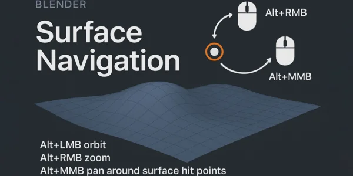
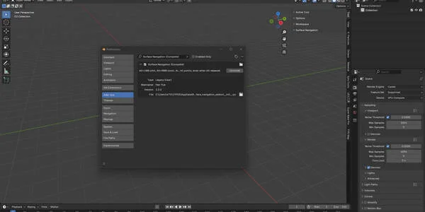
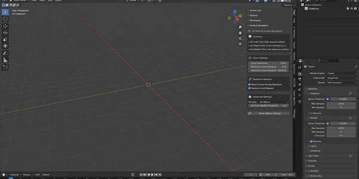
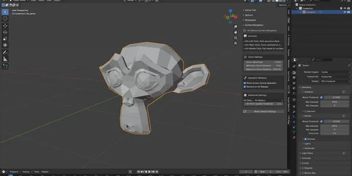
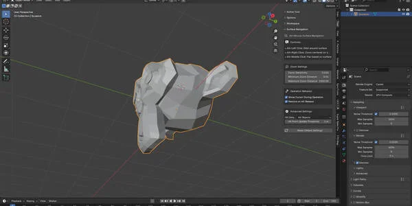
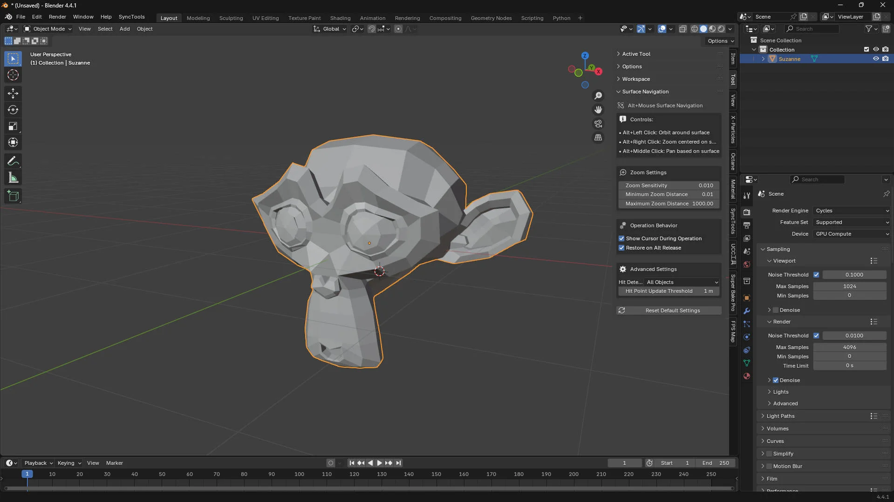
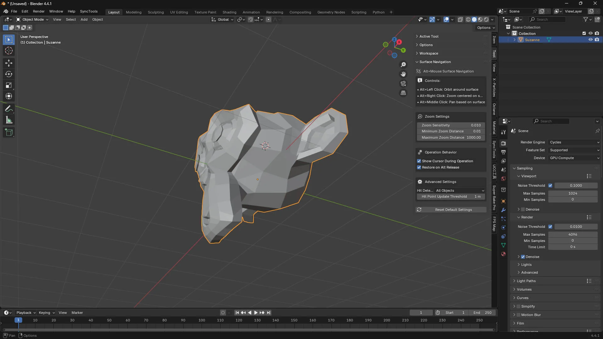
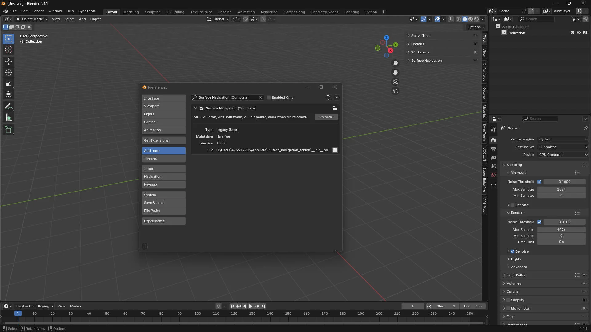

通过以下工具改变您的 Blender 3D 导航体验： Alt Surface Navigation，一款提供直观的 基于表面的视口控件.
这个完整的导航解决方案允许您 围绕任何表面点旋转、缩放和平移 在 3D 场景中精确且轻松地操作。

基于表面的导航 – 围绕实际表面命中点导航，而非任意视口中心
直观的控件 – 简单的 Alt + 鼠标组合进行所有导航操作
智能命中检测 – 可配置的检测模式，适用于所有对象、选中对象或可见对象
精确缩放 – 可调节的灵敏度和距离限制，实现完美控制
光标集成 – 操作期间可选的 3D 光标定位
阈值控制 – 通过命中点更新阈值防止导航抖动


Alt + 左键点击 → 围绕表面命中点旋转
Alt + 右键点击 → 以表面位置为中心缩放
Alt + 中键点击 → 基于表面参考点平移
缩放灵敏度调整 (0.001 – 0.1 range)
最小和最大缩放距离限制
命中点检测模式和更新阈值
操作期间的光标显示选项
释放 Alt 键时的恢复行为
精细的建模和雕刻 工作
建筑可视化
角色建模 和动画
Any 工作flow requiring 精确 3D 导航

无缝地 integrates into Blender’s 3D viewport
专用的设置面板 在工具类别中
所有设置均可通过 恢复默认值 选项访问
兼容 Blender 3.0+
专为 professional 工作flows
安装 addon file in Blender
导航控件即可使用—— 无需复杂设置
开始使用 表面精度导航
Alt Surface Navigation (完整的) - 高级 3D 视口导航（适用于 Blender）
通过以下工具改变您的 Blender 3D 导航体验： Alt Surface Navigation，一款提供直观的 基于表面的视口控件. 这个完整的导航解决方案允许您 围绕任何表面点旋转、缩放和平移 在 3D 场景中精确且轻松地操作。
KEY FEATURES:
NAVIGATION CONTROLS:
- Alt+左 Click: Orbit around surface hit points
- Alt+右 Click: Zoom centered on surface locations
- Alt+Middle Click: Pan based on surface reference points
CUSTOMIZABLE SETTINGS:
PERFECT FOR:
- 精细的建模和雕刻 工作
- 建筑可视化
- 角色建模 和动画
- Any 工作flow requiring 精确 3D 导航
The addon integrates seamlessly into Blender's 3D viewport with a dedicated 设置面板 in the 工具 category. All settings are easily accessible and can be reset to defaults with one click.
Compatible with Blender 3.0+ and designed for professional 工作flows. Whether you're a beginner learning 3D navigation or a professional seeking more precise viewport control, Alt Surface Navigation provides the tools you need for efficient 3D 工作.
安装 is simple - just install the addon file and the navigation controls are immediately available. No complex setup required - start navigating with 表面精度导航.
Take your Blender navigation to the next level with Alt Surface Navigation - where every click counts and every surface matters.